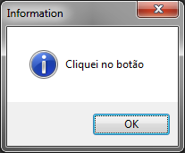
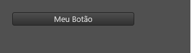
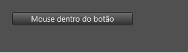
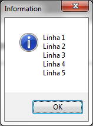

Tratando eventos do Lua Form
Eventos do Lua Form
Um evento é um acontecimento específico de alguma tag. É possível definir códigos LUA (veja A linguagem de programação LUA) que serão executados toda vez que determinado evento ocorrer em uma tag!
A maioria das tags/controles do Lua Form disparam eventos, mas cada uma possui seu próprio conjunto de eventos. Você deve consultar a documentação!
Manipulando eventos
Existem duas maneiras de manipular eventos do Lua Form:
- Associando uma única linha de código ao evento;
- Usando a tag event para associar várias linhas de códigos ao evento.
Importante: Não deixe de ler as Orientações ao usar código LUA em um Lua Form
Modo 1 - Associando uma única linha de código ao evento.
Esta é a forma mais simples de manipular eventos, porém não é possível associar um código de mais de 1 linha aos eventos por este modo.
Dado um evento de nome NOME_EVENTO de uma tag de nome NOME_TAG, você pode associar um código Lua assim:
| \<NOME_TAG NOME_EVENTO="\<CODIGO_LUA_DE_UMA_LINHA>"/> |
|---|
Modo 1, Exemplo 1 - OnClick de button
A tag button possui o evento "onClick".
| \<?xml version="1.0" encoding="UTF-8"?> \<form name="frmFichaTeste""> \<button text="Meu Botão" onClick="showMessage('Cliquei no botão');"/> \</form> |
|---|

Modo 1, Exemplo 2 - OnMouseEnter e OnMouseLeave de button
| \<?xml version="1.0" encoding="UTF-8"?> \<form name="frmFichaTeste"> \<button name="btnMeuBotao" text="Meu Botão" left="20" top="20" width="200" onMouseEnter="self.btnMeuBotao.text = 'Mouse dentro do botão'" onMouseLeave="self.btnMeuBotao.text = 'Meu Botão'"/> \</form> |
|---|
 ---->  ---->
Modo 1, Exemplo 3 - Definindo função e a chamando no evento OnClick de button
| \<?xml version="1.0" encoding="UTF-8"?> \<form name="frmFichaTeste"> \<script> local function exibirMensagem() local texto = ""; for i = 1, 5, 1 do texto = texto .. "Linha " .. i .. "\n"; end; showMessage(texto); end; \</script> \<button name="btnMeuBotao" text="Meu Botão" onClick="exibirMensagem()"/> \</form> |
|---|

Foi usada a Tag script neste exemplo.
Modo 2 - Usando a tag event para manipular eventos.
Saiba como usar a tag event e exemplos em: Tag event.
Created with the Personal Edition of HelpNDoc: Create help files for the Qt Help Framework